|
Dlaczego wybra³em to miejsce?
Poniewa¿ jest mniej znane ni¿ piramidy, lecz zbudowane z nie mniejszym rozmachem.
Poniewa¿ u¿yta tu technika w niczym nie ustêpuje tej spod piramid.
Poniewa¿ jest tu tyle samo zagadek co w piramidach.
I wreszcie mamy tu do czynienia nie z trzema obiektami, ale z wieloma i na du¿ym obszarze.
Miasto nale¿y do obszaru, który ja okre¶lam mianem "Inkaskiego krêgu". Miasto o typie
budowy zbli¿onym do wszystkich miejsc tego obszaru, którego centrum wydaje siê byæ Cusco.
"Kr±g inkaski" zajmuje prostok±t o wymiarach ok. 200 na 80 km. Przedstawiam go na za³±czonej mapce.
Wszystkie budowle spotkane na tym obszarze charakteryzuje jeden styl. Jeden sposób
³±czenia bloków kamiennych i jak siê wydaje tak¿e obróbki.
Machu Picchu, miasto zawieszone pomiêdzy ziemi± i niebem, wzniesione na szczycie ³añcucha górskiego,
otoczone g³êbokimi dolinami, w¶ród których wije siê rzeka Urubamba. Miasto, do którego
kiedy¶ wiod³a tylko jedna droga zbudowana na grani. Obok niego, jak stra¿nik, góruje szczyt
nazywany Huayna Picchu, na którym te¿ znajduj± siê zabudowania. Jaka si³a wnios³a na ten
szczyt potê¿ne bloki kamienne? Na to pytanie istniej± tylko g³upie odpowiedzi.
Oficjalna historia g³osi, ¿e miasto zbudowa³a miejscowa ludno¶æ gdzie¶ w roku 1500
naszej ery. Ogl±daj±c dzisiejsz± dwudziestowieczn± technikê okolicznych mieszkañców
mimowoli ci¶nie siê pytanie: czy ten co to g³osi wie co mówi, czy tylko mówi co wie?
Odkrycia miasta dokona³ Hiram Bingham w roku 1911 i w³a¶ciwie niejako przypadkiem.
Szuka³ czego innego. Szuka³ legendarnej, ostatniej stolicy Inków - Wilcabamby. To
miejscowi powiedzieli mu o tajemniczym mie¶cie z kamieni i oni zaprowadzili go
na miejsce odkrycia jego ¿ycia. Ale nie by³a to Wilcabamba. Odkry³ dla ¶wiata Machu Pichu.
Zapraszam do zwiedzenia tego miejsca. Nie bedzie to typowa wycieczka. Bêdê stara³
siê pokazaæ takie miejsca, które bêd± ¶wiadczyæ o wielkim kunszcie, a przede
wszystkim o niespotykanej technice jego twórcy.
Nazwy tak¿e nie odzwierciedlaj± przeznaczenia obiektów. S± wymys³em dzisiejszych archeologów
i raczej nadane dla ³atwiejszego ich odró¿niania. Przyk³adem tego mo¿e byæ ¶wi±tynia g³ówna.
W wyobra¼ni widzisz potê¿n± budowlê, a w rzeczywisto¶ci przed tob± ukazuje siê co¶ w rodzaju
bardzo solidnego... przystanku autobusowego.
Czy Machu Picchu mo¿na nazwaæ miastem? Jest to obszar o wymiarach 300 na 250 m, wed³ug mnie za ma³y na miasto,
za ma³y nawet na osiedle. Ca³o¶æ otoczona terasami, których zasadniczym zadaniem by³o i jest
chronienie stoków górskich przed osuniêciem siê podczas trzêsienia ziemi i
zapewne nigdy nie s³u¿y³y za pola uprawne. Brak jakichkolwiek
murów spe³niaj±cych zadania obronne ¶wiadczy o tym, ¿e nie by³y potrzebne. Ochronê
stanowi³y wysokie, pionowe terasy i gdzieniegdzie mury. Kompleks mo¿na podzieliæ na trzy
oddzielne miejsca.
• kompleks wschodni sk³adaj±cy siê z najwiêkszej ilo¶ci zabudowañ,
• kompleks po³udniowy stanowi±cy jakby zespó³, gdzie przyjmowano przybyszy, oraz
• dwa oddzielne obiekty, po³o¿one jakby na uboczu - "¶wi±tynia" g³ówna i Intihuatana
po³o¿ona na najwy¿szym, sztucznym wzgórzu.
Kompleksy "wschodni" i "zachodni" by³y oddzielone od siebie szerokim, p³askim placem,
na którym nie by³o ¿adnych zabudowañ. Do kompleksu zachodniego mo¿na by³o dostaæ siê tylko
przez bramê g³ówn± lub przez dwa ci±gi schodów i nie sposób by³o do nich doj¶æ niepostrze¿enie.
W miejscu oznaczonym nr 7 (¶wiêta ska³a) sta³y dwa pomieszczenia chroni±ce jakby ¶cie¿kê prowadz±c±
do zabudowañ na szczycie Huayna Picchu. Ca³o¶æ nie stawarza wra¿enia ani o¶rodka kultowego
ani kompleksu mieszkalnego.
Utrzymywanie, ¿e miasto zosta³o opuszczone z powodów religijnych czy gospodarczych uwa¿am za
ewidentne brednie. Je¶li mieszkali tu ludzie z XVI wieku to proszê pokazaæ ich cmentarzyska,
proszê powiedzieæ dlaczego nie ma kanalizacji, proszê pokazaæ choæ jeden ma³y "wychodek".
Nic takiego tu nie ma.
S±dzê, ¿e opuszczenie miasta nale¿y wi±zaæ z wielkim trzêsieniem ziemi 12,5 tys. lat temu.
Skutki tego widaæ na ka¿dym kroku. Nie znaleziono ¿adnej ludzkiej kosteczki, ¿adnego
dzie³a sztuki. Byæ mo¿e jest co¶ ukryte pod ziemi±, ale nikt takich badañ tu nie prowadzi.
Jest jednak co¶, co wskazuje na istnienie podziemnych pomieszczeñ. Poka¿ê je pó¼niej.
Do Machu Picchu prowadzi³a jedna droga. Tu¿ przed miastem (zostañmy przy tym okre¶leniu)
znajdowa³o siê co¶ w rodzaju punktu kontroli - Intipunku. Ma³y kamienny kompleks tu¿ przy drodze.
Na koñcu tej drogi znajdowa³a siê jedyna brama prowadz±ca do wnêtrza kompleksu
zachodniego i schody prowadz±ce w dó³ wzd³u¿ murów do kompleksu po³udniowego.
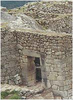 |
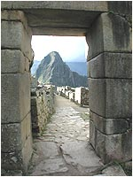 |
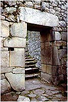 |
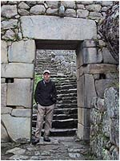 |
Sama brama jest ³udz±co podobna do Lwiej Bramy z Myken, choæ niew±tpliwie ta ostatnia
jest o wiele potê¿niejsza. Usytuowana podobnie w za³omku muru,
zbudowana z potê¿nych bloków kamienia. Ró¿ni j± tak¿e to, co ogl±damy z drugiej strony.
Nad bram± kamienny pier¶cieñ, a w po³owie bramy po bokach prostok±tne otwory z uchwytem
w ¶rodku, jakby do przywi±zywania koni.
Sam wygl±d miasta sprawia wra¿enie jakby by³o budowane w kilku (technologicznych) etapach,
lub odbudowywane ze zniszczeñ przez kogo¶, kto nie mia³ ju¿ takich technicznych mo¿liwo¶ci
jak pierwsi budowniczy. S± rejony, gdzie widaæ rêkê mistrza, inny rodzaj kamienia, dok³adno¶æ
budowy. Sa i takie, które sprawiaj± du¿o mniej korzystne wra¿enie.
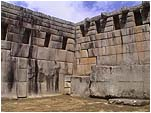 |
|
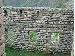 |
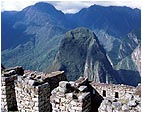 |
Pozwolisz zatem, ¿e teraz obejrzymy wspólnie miejsca, które s± najciekawsze.
Usytuowana jest na sztucznym wzgórzu, wzmocnionym terasami. Wraz ze ¶wi±tyni± trzech okien
zbudowana jest bodaj z najwiêkszych bloków spotykanych w Machu Picchu.
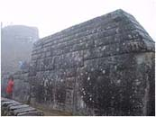 |
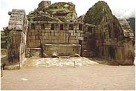 |
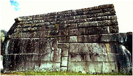 |
Pokazujê j± z trzech stron, by¶ mia³ wyobra¿enie o wielko¶ci stosowanych kamiennych bloków.
Najwiêkszy jest wzrostu doros³ego cz³owieka.
Zwróæ sw± uwagê na jej wygl±d. Czy twoje
wyobra¿enie o ¶wiatyni pasuje do czego¶ takiego? Czy faktycznie nie przypomina ona solidnego
przystanku autobusowego? Gdzie tu o³tarze, gdzie miejsce dla odprawiania obrz±dku, gdzie
wreszcie miejsce dla "wiernych"? Co¶ tu jest nie tak. Czy to by³ warsztat, stacja obs³ugi,
czy jeszcze co¶ innego, o czym my dzisiejsi ludzie nie mamy pojêcia?
Jaki dach zabezpiecza³
ten budynek? Na ¶cianach widaæ tylko grube wypusty. Czy s³u¿y³y do podtrzymania czego¶,
co mog³o byæ dachem? Chyba nie, bo znajduj± siê tylko na jednej wewnêtrznej ¶cianie.
Zdjêcie poni¿ej ukazuje powiêkszenie wewnêtrznej ¶ciany ¶wi±tyni, tej z niszami. Górne
bloki kamienia s± w kszta³cie litery "L" i te krótsze ramiona tworz± co¶ w rodzaju
wypustów. Jak± mia³y pe³niæ rolê. Nie wiadomo. Jest to budowla, jedna z kilku, zbudowana
z jednolitych bloków kamiennych, z których niektóre elementy wydaj± siê byæ jednakowej wielko¶ci.
Wydaje siê te¿, ¿e zachowano w niej elementy symetrii.
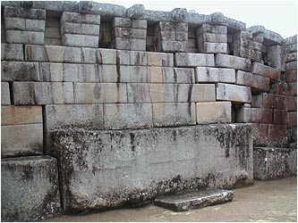 |
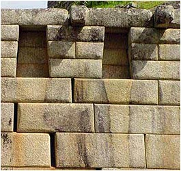 |
W samej budowli archeolodzy prawdopodobnie nie wykonali ¿adnych pomiarów i
chyba tylko dlatego, by nie
powiekszaæ ilo¶ci i tak ju¿ du¿ej ilo¶ci pytañ. Na pierwszy rzut oka widaæ jednak,
¿e elementy wykonano nie przypadkowo, a symetria wprost rzuca siê w oczy. Do dzi¶
uczeni nie dali tak¿e konkretnej odpowiedzi do
czego mia³y s³u¿yæ trapezoidalne nisze. Wed³ug ich hipotezy by³y to miejsca na ustawienie
figurek Bogów. Ale czy to jest prawda? Jest ich tak du¿o, ¿e dzisiejszy (teoretyczny)
panteon nale¿a³oby powiêkszyæ co najmniej kilka razy. Ponadto nie pokuszono siê o sprawdzenie
czy przypadkiem nie posiadaj± jednakowych wymiarów, co mog³oby oznaczaæ, ¿e stworzono je
dla przechowywania czego¶, co nazwaliby¶my dzisiaj rzecz± standardow±.
Powiêkszone zdjêcie po prawej daje jednak du¿o do my¶lenia. Widaæ wyra¼nie, ¿e
z nisz "co¶" wyciek³o i
to "co¶" wyra¼nie odbarwi³o kamieñ. Pocz±tkowa, szara barwa kamienia z czarnymi smugami
zosta³a zmieniona na ¿ó³taw±, która wyra¼nie ró¿ni siê od otoczenia. Co to by³ za p³yn?
Na pewno nie wino mszalne i na pewno nie Bóg w p³ynie. Pró¿no jednak szukaæ prób
ustalenia sk³adu tego p³ynu czy chocia¿by ustalenia co mog³o zostawiæ na ¶cianach
te czarne smugi. Czy te ¿ó³tawe smugi spowodowa³y opady deszczu? Je¶li
by tak by³o, to dlaczego nie zmy³y ca³ych ¶cian? Czy w niszach przechowywano naczynia z "czym¶"
w postaci p³ynnej czy pó³p³ynnej? Na te pytania jeszcze nikt nie próbowa³ odpowiedzieæ.
Po³o¿ona tu¿ obok ¶wi±tyni g³ównej. Nazwê zawdziêcza trzem trapezoidalnym otworom wyciêtym
w blokach skalnych, z których j± zbudowano. Dodam w tym miejscu, ¿e taki rodzaj okien,
drzwi i nisz spotkaæ mo¿na tylko w rejonach, gdzie dzia³ali poprzednicy Inków.
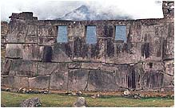 |
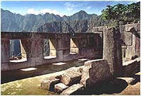
| 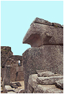 |
Na ¶rodku stoi kamienny s³up, jakby podpora do nieistniej±cej poziomej belki mocowanej w
¶cianach bocznych w specjalnych wyciêciach kamiennych bloków. Samo wykonanie okien
stwarza wra¿enie jakby zosta³y wyciête w litej skale po wybudowaniu muru. Jakiego
sposobu u¿yto? Czy by³o to mozolne wykuwanie?
|
Intihuatana - kamieñ s³oñca? |
Jeden z najciekawszych bloków kamiennych. Ochrzczony mianem iglicy s³oñca - Intihuatana,
wed³ug bieg³ych, jest swego rodzaju gnomonem, który ludziom epoki ¶redniowiecza mia³ przypominaæ
o sianiu, zbieraniu i ¶niadaniu. Ciemnym ludziom oznajmia³ nadej¶cie wiosny, i
kaza³ zbieraæ chrust na zimê?
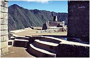 |
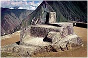 |
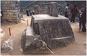 |
Czy faktycznie by³ to s³oneczny zegar? Nie jest skierowany w kardynalnych geograficznych
kierunkach ¶wiata. W przybli¿eniu pionowy wypust wskazuje kierunek pó³nocno-zachodni.
Po za tym liczne wyciêcia, naciêcia, ¿³obienia, p³aszczyzny we
wszystkich kierunkach nie wiadomo czemu mia³y s³u¿yæ. Pêkniêcie u podstawy ¶wiadczyæ mo¿e
o tym, i¿ dozna³ on potê¿nego wstrz±su. Gdyby siê jednak okaza³o, ¿e iglica wskazuje
kierunek oko³o 2º na wschód od pó³nocy? Je¶li przeczyta³e¶ ju¿ fragment o "siedemnastu
stopniach Daenikena", to ju¿ powiniene¶ siê domy¶laæ...
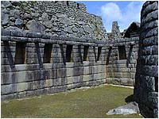
Najwspanialszy bodaj, pod wzglêdem wykonania, budynek. Jest w zasadzie kompleksem tajemnic.
Mur posadowiony na przyciêtej specjalnie skale. Doskonale dopasowane i obrobione kamienie,
przypominaj±ce ta¶mowy wyrób. W tym stylu zbudowany jest w zasadzie ca³y zespó³ i jedna
budowla na pó³noc od niego. Obok otworu okiennego "¶wi±tyni S³oñca", po stronie
zewnetrznej, umieszczono
kamienne wypusty. Czy przytrzymywa³y ¶redniowieczn± szybê, czy s³u¿y³y innemu celowi.
Ja nie mam ¿adnego pomys³u.
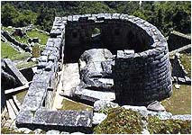
Jeszcze dziwniejszy jest obiekt który os³aniaj±. Stanowi on szczyt ska³y macierzystej
tu i ówdzie ponacinany i przyszlifowany. Tyle zachodu dla jednego kamienia? Musia³o to co¶
znaczyæ, tym bardziej, ¿e prawie identycznê budowlê spotykamy w Pisaq na pó³noc od Cusco.
Czy ma to zwi±zek ze wspominanym w mitach greckich promieniowaniem tellurycznym (ziemskim),
przez radiestetów nazywanym czarnym? Byæ mo¿e. Energiê z ziemi czerpa³, wed³ug mitów,
Anteusz (gigant - syn Posejdona i Gai),
zabity przez Heraklesa dopiero wtedy, gdy ten uniós³ go do góry odrywaj±c go od ziemi, ¼ród³a
jego mocy.
Czy to przypadek, ¿e w "¶wi±tyni" S³oñca pod trapezoidalnymi niszami spotykamy
podobne "nacieki" jak w "¶wi±tyni"
g³ównej? Spójrz na zdjêcie po prawej. Mury czarno-szare i podobne jasne smugi ci±gn±ce
siê od podstaw nisz ku do³owi. Co ciekawe budowla ta jest te¿ zbudowana z jednolitych
"kamiennych" cegie³, podobnie jak i "¶wi±tynia" g³ówna i tylko w tych dwóch miejscach
zauwa¿y³em takie ¶lady.
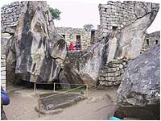
Kompleks ten znajduje siê w po³udniowo-wschodniej czê¶ci ca³ego kompleksu, poni¿ej du¿ego,
zeszlifowanego kawa³ka ska³y, nazwanego przeze mnie ska³±-lustrem.
Nazwê przyjêto zapewne z powodu jednej rze¼by w kamieniu przypominaj±cej pazur. Czy to jest
pazur kondora trudno oceniæ. Dla mnie podobniejszy jest do dzioba. Tworzy³by pewn± ca³o¶æ,
je¶li ska³y za nim przyj±æ za rozpostarte skrzyd³a. Do¶æ ciekawie wygl±daj± mury wkomponowane
bezpo¶rednio w ska³y. Poza tym nie ma tu nic co by przypomina³o ¶wi±tyniê.
Jest to chyba najbardziej "zagmatwane" miejsce w ca³ym kompleksie. Pe³no tu krzywizn i
poskrêcanych scie¿ek, mnóstwo kamiennych "cegie³" ustawianych wprost na litej skale, a
tak¿e wnêk prowadz±cych do nik±d.
Nastêpna ciekawostka. Fragment ska³y zeszlifowany na p³asko. Chyba po to, by odbijaæ
promienie popo³udniowego s³oñca. Czy faktycznie s³u¿y³ do tego, by byæ widocznym z daleka?
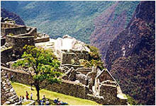 |
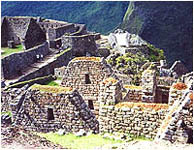 |
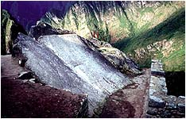 |
Czy zadaniem tej ska³y by³o byæ widoczn± z powietrza? Nie znaj±c techniki i technologii
budowniczych nie sposób wyci±gn±æ jakichkolwiek racjonalnych wniosków. Na dobr± sprawê
mog³a to byæ te¿ "ozdóbka" daj±ca tylko efekt przyjemno¶ci samego ogl±dania.
|
Rumowisko skalne na terasie |
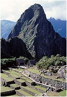
Rzeczone rumowisko znajdziesz po prawej stronie zdjêcia u do³u. Na lewo od niego
wznosi siê Huayna Picchu, ni¿ej dwa, s³abo widoczne domki pokryte wspó³czesn± strzech±,
pomiêdzy którymi niewidoczna, znajduje siê ¶wiêta ska³a.
Dlaczego sta³o siê ono obiektem mojego zainteresowania? Otó¿ nie tyle rumowisko, co miejsce,
na którym siê ono znajduje. W Machu Picchu spotykamy trzy skupiska rumowisk skalnych,
ale ¿adne z nich nie zajmuje tak eksponowanego miejsca. To natomiast, obramowane potê¿nymi murami teras
mo¿e ¶wiadczyæ, ¿e kiedy¶ to rumowisko by³o albo budowl±, albo czym¶ podobnym do zdobnej
jaskinii. Mo¿e te¿ stanowi³o wej¶cie do podziemnych pomieszczeñ. Nie wiem.
Co to by³o naprawdê, dowiemy siê nie prêdko. Nie ma na razie takiej
si³y, która mog³aby unie¶æ ska³y i dopasowaæ je jako¶ do siebie.
Samo umiejscowienie rumowiska w obrêbie terasy daje wiele do my¶lenia. Skoro, jak wspomina³em,
terasy s³u¿y³y przede wszystkim jako zabezpieczenie przed osuwaniem siê ziemi podczas
trzêsienia ziemi, to dochodzê do wniosku, ¿e musia³y chroniæ co¶ naprawdê wa¿nego.
Góra bêd±ca dla Machu Picchu jego symbolem. Ka¿de zdjêcie, ka¿da pocztówka zawiera ten widok.
Jest tym samym, co dla Rio de Janeiro s³ynna "G³owa cukru". Tak¿e na niej budowniczy zostawili
swój ¶lad. Tajemnic± zostanie to jak oni wynie¶li tak wysoko bloki skalne, z których zbudowano terasy
i budynki.
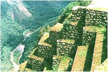 |
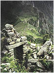 |
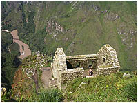 |
Doj¶cie na szczyt, to w±ska ¶cie¿ka wy³o¿ona kamiennymi p³ytami. Wznosi siê czasem pod k±tem
wiêkszym od 45º. Dwoje ludzi aby siê min±æ musz± siê otrzeæ o siebie. Jak wobec tego
wniesiono tam bloki skalne wa¿±ce po kilka, kilkana¶cie ton? W jakim celu na szczycie góry
umieszczano zabudowania? Czy to by³y ¶wi±tynie? Je¶li tak, to tylko dla najbardziej
sprawnych fizycznie. Czy ich Bóg nie kocha³ starych i u³omnych?
Ten kawa³ ska³y na pewno mia³ jakie¶ znaczenie. Postawiono go pionowo, wokó³ u³o¿ono
obramowanie z dok³adnie uformowanych, ¶ci¶le do siebie przylegaj±cych kamieni.
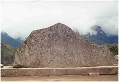 |
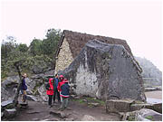 |
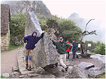 |
Tak siê nie postêpuje z przedmiotem bez znaczenia. Jaki jest du¿y wnioskujesz po
sylwetkach ludzi, a i waga na pewno du¿a. Niektórzy s±dz±, ¿e przedstawia zarys góry
le¿±cej za nim (na zdjêciu w chmurach). Musisz uwierzyæ mi na s³owo. Przypomina. Nie
wiem jednak dlaczego ska³a jest obrócona o 180º w stosunku do orygina³u.
|